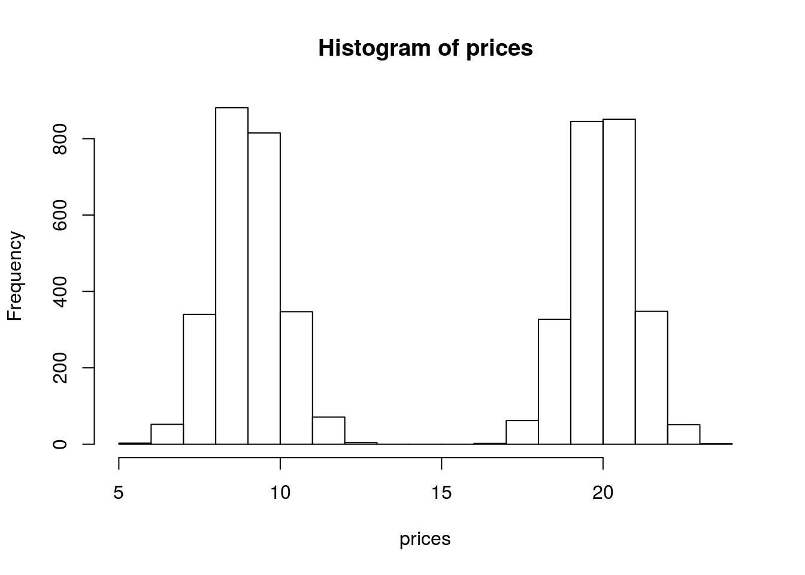

Introduction to Mixture Models
Matt Bonakdarpour
2016-01-22
Last updated: 2017-03-06
Code version: c7339fc
Prerequisites
This document assumes basic familiarity with probability theory.
Overview
We often make simplifying modeling assumptions when analyzing a data set such as assuming each observation comes from one specific distribution (say, a Gaussian distribution). Then we proceed to estimate parameters of this distribution, like the mean and variance, using maximum likelihood estimation.
However, in many cases, assuming each sample comes from the same unimodal distribution is too restrictive and may not make intuitive sense. Often the data we are trying to model are more complex. For example, they might be multimodal – containing multiple regions with high probability mass. In this note, we describe mixture models which provide a principled approach to modeling such complex data.
Example 1
Suppose we are interested in simulating the price of a randomly chosen book. Since paperback books are typically cheaper than hardbacks, it might make sense to model the price of paperback books separately from hardback books. In this example, we will model the price of a book as a mixture model. We will have two mixture components in our model – one for paperback books, and one for hardbacks.
Let’s say that if we choose a book at random, there is a 50% chance of choosing a paperback and 50% of choosing hardback. These proportions are called mixture proportions. Assume the price of a paperback book is normally distributed with mean $9 and standard deviation $1 and the price of a hardback is normally distributed with a mean $20 and a standard deviation of $2. We could simulate book prices \(P_i\) in the following way:
- Sample \(Z_i \sim \text{Bernoulli}(0.5)\)
- If \(Z_i = 0\) draw \(P_i\) from the paperback distribution \(N(9,1)\). If \(Z_i = 1\), draw \(P_i\) from the hardback distribution \(N(20,2)\).
We implement this simulation in the code below:
NUM.SAMPLES <- 5000
prices <- numeric(NUM.SAMPLES)
for(i in seq_len(NUM.SAMPLES)) {
z.i <- rbinom(1,1,0.5)
if(z.i == 0) prices[i] <- rnorm(1, mean = 9, sd = 1)
else prices[i] <- rnorm(1, mean = 20, sd = 1)
}
hist(prices) We see that our histogram is bimodal. Indeed, even though the mixture components are each normal distributions, the distribution of a randomly chosen book is not. We illustrate the true densities below:  We see that the resulting probability density for all books is bimodal, and is therefore not normally distributed. In this example, we modeled the price of a book as a mixture of two components where each component was modeled as a Gaussian distribution. This is called a Gaussian mixture model (GMM).
We see that the resulting probability density for all books is bimodal, and is therefore not normally distributed. In this example, we modeled the price of a book as a mixture of two components where each component was modeled as a Gaussian distribution. This is called a Gaussian mixture model (GMM).
Example 2
Now assume our data are the heights of students at the University of Chicago. Assume the height of a randomly chosen male is normally distributed with a mean equal to \(5'9\) and a standard deviation of \(2.5\) inches and the height of a randomly chosen female is \(N(5'4, 2.5)\). However, instead of 50/50 mixture proportions, assume that 75% of the population is female, and 25% is male. We simulate heights in a similar fashion as above, with the corresponding changes to the parameters:
NUM.SAMPLES <- 5000
heights <- numeric(NUM.SAMPLES)
for(i in seq_len(NUM.SAMPLES)) {
z.i <- rbinom(1,1,0.75)
if(z.i == 0) heights[i] <- rnorm(1, mean = 69, sd = 2.5)
else heights[i] <- rnorm(1, mean = 64, sd = 2.5)
}
hist(heights)
Now we see that histogram is unimodal. Are heights normally distributed under this model? We plot the corresponding densities below:

Here we see that the Gaussian mixture model is unimodal because there is so much overlap between the two densities. In this example, you can see that the population density is not symmetric, and therefore not normally distributed.
These two illustrative examples above give rise to the general notion of a mixture model which assumes each observation is generated from one of \(K\) mixture components. We formalize this notion in the next section.
Before moving on, we make one small pedagogical note that sometimes confuses students new to mixture models. You might recall that if \(X\) and \(Y\) are independent normal random variables, then \(Z=X+Y\) is also a normally distributed random variable. From this, you might wonder why the mixture models above aren’t normal. The reason is that \(X+Y\) is not a bivariate mixture of normals. It is a linear combination of normals. A random variable sampled from a simple Gaussian mixture model can be thought of as a two stage process. First, we randomly sample a component (e.g. male or female), then we sample our observation from the normal distribution corresponding to that component. This is clearly different than sampling \(X\) and \(Y\) from different normal distributions, then adding them together.
Definition
Assume we observe \(X_1,\ldots,X_n\) and that each \(X_i\) is sampled from one of \(K\) mixture components. In the second example above, the mixture components were \(\{\text{male,female}\}\). Associated with each random variable \(X_i\) is a label \(Z_i \in \{1,\ldots,K\}\) which indicates which component \(X_i\) came from. In our height example, \(Z_i\) would be either \(1\) or \(2\) depending on whether \(X_i\) was a male or female height. Often times we don’t observe \(Z_i\) (e.g. we might just obtain a list of heights with no gender information), so the \(Z_i\)’s are sometimes called latent variables.
From the law of total probability, we know that the marginal probability of \(X_i\) is: \[P(X_i = x) = \sum_{k=1}^K P(X_i=x|Z_i=k)\underbrace{P(Z_i=k)}_{\pi_k} = \sum_{k=1}^K P(X_i=x|Z_i=k)\pi_k\]
Here, the \(\pi_k\) are called mixture proportions or mixture weights and they represent the probability that \(X_i\) belongs to the \(k\)-th mixture component. The mixture proportions are nonnegative and they sum to one, \(\sum_{k=1}^K \pi_k = 1\). We call \(P(X_i|Z_i=k)\) the mixture component, and it represents the distribution of \(X_i\) assuming it came from component \(k\). The mixture components in our examples above were normal distributions.
For discrete random variables these mixture components can be any probability mass function \(p(. \mid Z_{k})\) and for continuous random variables they can be any probability density function \(f(. \mid Z_{k})\). The corresponding pmf and pdf for the mixture model is therefore:
\[p(x) = \sum_{k=1}^{K}\pi_k p(x \mid Z_{k})\] \[f_{x}(x) = \sum_{k=1}^{K}\pi_k f_{x \mid Z_{k}}(x \mid Z_{k}) \]
If we observe independent samples \(X_1,\ldots,X_n\) from this mixture, with mixture proportion vector \(\pi=(\pi_1, \pi_2,\ldots,\pi_K)\), then the likelihood function is: \[L(\pi) = \prod_{i=1}^n P(X_i|\pi) = \prod_{i=1}^n\sum_{k=1}^K P(X_i|Z_i=k)\pi_k\]
Now assume we are in the Gaussian mixture model setting where the \(k\)-th component is \(N(\mu_k, \sigma_k)\) and the mixture proportions are \(\pi_k\). A natural next question to ask is how to estimate the parameters \(\{\mu_k,\sigma_k,\pi_k\}\) from our observations \(X_1,\ldots,X_n\). We illustrate one approach in the introduction to EM vignette.
Acknowledgement: The “Examples” section above was taken from lecture notes written by Ramesh Sridharan.
Session information
sessionInfo()R version 3.3.2 (2016-10-31)
Platform: x86_64-pc-linux-gnu (64-bit)
Running under: Ubuntu 14.04.5 LTS
locale:
[1] LC_CTYPE=en_US.UTF-8 LC_NUMERIC=C
[3] LC_TIME=en_US.UTF-8 LC_COLLATE=en_US.UTF-8
[5] LC_MONETARY=en_US.UTF-8 LC_MESSAGES=en_US.UTF-8
[7] LC_PAPER=en_US.UTF-8 LC_NAME=C
[9] LC_ADDRESS=C LC_TELEPHONE=C
[11] LC_MEASUREMENT=en_US.UTF-8 LC_IDENTIFICATION=C
attached base packages:
[1] stats graphics grDevices utils datasets methods base
other attached packages:
[1] workflowr_0.4.0 rmarkdown_1.3.9004
loaded via a namespace (and not attached):
[1] backports_1.0.5 magrittr_1.5 rprojroot_1.2 htmltools_0.3.5
[5] tools_3.3.2 yaml_2.1.14 Rcpp_0.12.9 stringi_1.1.2
[9] knitr_1.15.1 git2r_0.18.0 stringr_1.2.0 digest_0.6.12
[13] gtools_3.5.0 evaluate_0.10 This site was created with R Markdown